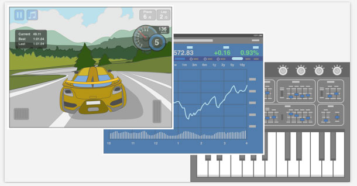

<!DOCTYPE html>
<html lang="zh-cn">
<head>
    <meta charset="utf-8">
    <meta http-equiv="X-UA-Compatible" content="IE=edge">

    <meta name="description" content="">
    <meta name="author" content="">
    <title>Share经验分享-详细页</title>

    <link href="css/lucd.css" rel="stylesheet">
    <link href="css/animate.css" rel="stylesheet">

    <!--[if lt IE 9]>
        <script src="js/ie8-responsive-file-warning.js"></script>
    <![endif]-->
    <script src="js/ie-emulation-modes-warning.js"></script>

    <!-- HTML5 shim and Respond.js for IE8 support of HTML5 elements and media queries -->
    <!--[if lt IE 9]>
      <script src="js/html5shiv.min.js"></script>
      <script src="js/respond.min.js"></script>
    <![endif]-->

    <!-- Bootstrap core JavaScript
        ================================================== -->
    <!-- Placed at the end of the document so the pages load faster -->
    <script src="js/jquery-1.11.3.min.js"></script>
    <script src="js/lucd.js"></script>
    <script src="js/common.js"></script>

    <!-- IE10 viewport hack for Surface/desktop Windows 8 bug -->
    <script src="js/ie10-viewport-bug-workaround.js"></script>

</head>
<body class="lucd-bg-gray">
    <!--页面头部栏 Starts-->
    <div class="lucd-header">
        <div class="lucd-navbar lucd-navbar-default">
            <div class="lucd-container">
                <!-- 左侧LOGO Starts -->
                <div class="lucd-navbar-header">
                    <a class="lucd-navbar-brand" href="index.html">
                        <div class="brand-inner">
                            <span class="logo"></span>
                            <span class="logo-vice"></span>
                        </div>
                    </a>
                </div>
                <!-- 左侧LOGO Ends -->
                <!-- 右侧内容 Starts -->
                <ul class="lucd-nav lucd-navbar-nav lucd-navbar-right">
                    <li><a href="index.html" title="首页">首页</a></li>
                    <li><a href="case.html" title="案例">案例</a></li>
                    <li><a href="data-analysis.html" title="数据分析" >数据分析</a></li>
                    <li class="active"><a href="share.html" title="分享">分享</a></li>
                    <li><a href="javascript:void(0);" title="产品攻略">产品攻略</a></li>
                    <!-- <li><a href="forum.html" title="论坛">论坛</a></li> -->
                    <li class="lucd-dropdown lucd-header-personInfo">
                        <a href="javascript:void(0);" class="lucd-dropdown-toggle lucd-avatar lucd-avatar-round" data-toggle="dropdown" role="button" aria-haspopup="true" aria-expanded="false"></a>
                        <div class="lucd-dropdown-menu">
                            <i class="lucd-caret-up"></i>
                            <i class="lucd-caret-up-cover"></i>
                            <div class="lucd-header-toptip-card">
                                <ul class="operationLink">
                                    <li class="borderR"><a href="javascript:void(0)" title="个人设置">个人设置</a></li>
                                    <li><a href="javascript:void(0)" title="个人空间">个人空间</a></li>
                                    <li class="borderR"><a href="javascript:void(0)" title="我的订阅">我的订阅</a></li>
                                    <li><a href="javascript:void(0)" title="退出系统">退出系统</a></li>
                                </ul>
                                <div class="position"><span>前端开发工程师</span></div>
                            </div>
                        </div>
                    </li>
                </ul>
                <!-- 右侧内容 Ends -->
            </div>
        </div>
    </div>
    <!--页面头部栏 Ends-->

    <!--知识分享头部 Starts-->
    <div class="lucd-share-page-header">
        <div class="lucd-share-page-header-inner">
            <div class="lucd-container">
                <div class="lucd-avatar lucd-avatar-lm lucd-avatar-round"></div>
                <div class="lucd-page-header">
                    <h1>[ISUX译]iOS 9人机界面指南(二)：设计策略面指南(二)：设计策略面指南</h1>
                    <div class="lucd-meta-info">
                        <span class="name">王光明</span>
                        <span>发布于 15-10-27  10:24:21</span>
                        <span>转载自 UI中国</span>
                        <span><i class="lucd-icon lucd-icon-eye"></i>2145</span>
                        <a class="lucd-btn lucd-btn-sm lucd-btn-success"><i class="lucd-icon lucd-icon-download"></i>下载<em class="num">(23)</em></a>
                    </div>
                </div>
            </div>
        </div>
    </div>
    <!--知识分享头部 Ends-->
    <!--知识分享内容 Starts-->
    <div class="lucd-container">
        <div class="lucd-share-page-content">
            <!--<h3 class="title">[ISUX译]iOS 9人机界面指南(二)：设计策略</h3>-->
            <p>译自苹果官方人机界面指南 iOS Human Interface Guidelines (2015年10 月21日)，由腾讯ISUX翻译整理，非发文者一人之作</p>
            <p>文章索引</p>
            <p>2.1 设计原则(Design Principles)</p>
            <p>2.1.1 美学完整性(Aesthetic Integrity)</p>
            <p>2.1.2 一致性(Consistency)</p>
            <p>2.1.3 直接操作(Direct Manipulation)</p>
            <p>2.1.4 反馈(Feedback)</p>
            <p>美学完整性不评判应用的视觉设计，也不是用来描述应用的风格特征。美学完整性是指在一款应用的视觉表现和交互行为与功能结合后所传达出的整体一致性。</p>
            <p class="img"></p>
            <p>人们关心应用是否提供了应有的功能，但是也会潜移默化甚至是很直接地被应用的视觉表现和交互行为所影响。举个例子，一款协助用户完成任务的应用，可以通过使用精美而又无干扰的装饰性元素、标准的控件和可预期的交互行为很好地帮助用户聚焦在任务本身上。这样，应用就能传达出清晰而一致的信息，使得人们信任它。但是，如果应用使用干扰的、琐碎的或随意的UI来呈现任务，那么人们可能会对其可靠性和可信赖度产生怀疑。</p>
            <p>另一方面，在沉浸式应用中—例如游戏—用户期待惊艳的视觉表现，为用户带来乐趣和刺激，并鼓励用户进行探索。用户不是要在游戏中完成严肃的或程序式的任务，他们更期待游戏的视觉表现和交互行为与当前的目的进行整合。</p>
        </div>
    </div>
    <!--知识分享内容 Ends-->

    <!--页面注脚 Starts-->
    <div class="lucd-footer">
        <div class="lucd-footer-innerbox">
            <div class="lucd-container">
                <p>蓝凌软件 版权所有</p>
                <p>
                    <span>粤ICP备11017824号-4 / 粤ICP证130164号</span>
                    <span class="lucd-ml-15">深圳市公安局南山分局备案编号:110105000501</span>
                </p>
                <p class="copyright">Copyright &copy; 2001-2015</p>
            </div>
        </div>
    </div>
    <!--页面注脚 Ends-->
    <!--固定侧边工具栏 Starts-->
    <div class="lucd-fixed-toolbar">
        <a href="javascript:void(0);" class="lucd-btn" id="scrollToTop" title="置顶">
            <div class="innerbar">
                <i class="lucd-icon lucd-icon-lg lucd-icon-32-top"></i>
                <span class="text-top">置顶</span>
            </div>
        </a>
    </div>
    <!--固定侧边工具栏 Ends-->
    <!--意见反馈栏 Starts-->
    <div class="lucd-feedback-box">
        <div class="lucd-feedback-heading">
            <button class="lucd-btn lucd-btn-default" type="button">
                <i class="lucd-icon lucd-icon-words"></i>
                帮助&意见反馈
                <i class="lucd-icon lucd-icon-arrDotL"></i>
            </button>
        </div>
        <div class="lucd-feedback-content">
            <form class="lucd-form-comment lucd-form-horizontal">
                <div class="lucd-form-group">
                    <textarea class="lucd-form-control" rows="10" placeholder="有任何意见或建议，请告诉我们！"></textarea>
                </div>
                <!--<div class="lucd-alert lucd-alert-warning">使用遇到问题？请先进入<a class="lucd-text-primary" href="javascript:void(0);" title="帮助中心">帮助中心</a></div>-->
                <div class="lucd-form-group lucd-form-comment-footer lucd-text-right">
                    <button class="lucd-btn lucd-btn-mute" type="button" id="feedback-close">关闭</button>
                    <button class="lucd-btn lucd-btn-primary" type="button">提交</button>
                </div>
            </form>
        </div>
    </div>
    <!--意见反馈栏 Ends-->
</body>
</html>
